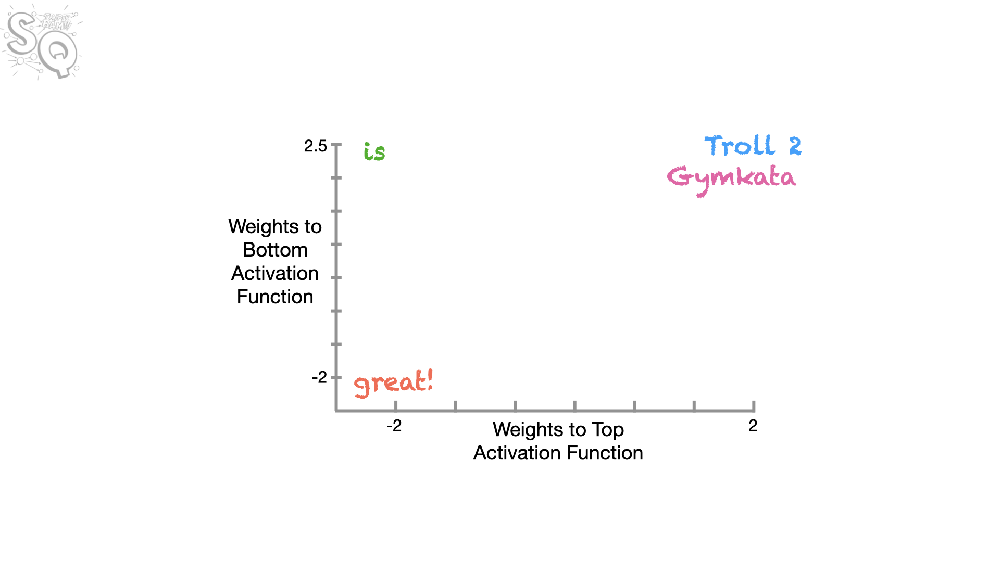
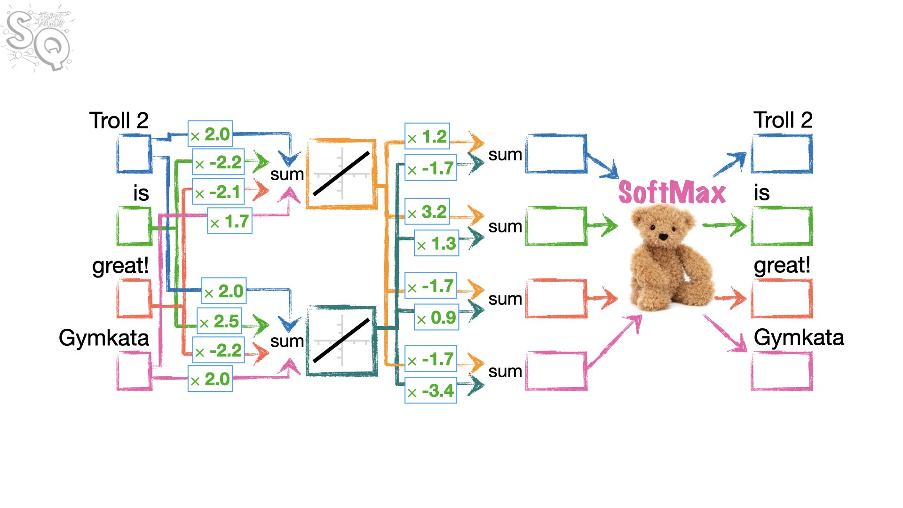

Las redes neuronales funcionan con números, no con palabras.
Por lo tanto, si queremos introducir palabras en una red neuronal, necesitamos una forma de convertirlas en números.
En teoría, podríamos simplemente asignar números aleatorios a las palabras…
Números aleatorios
Troll 2 -> 12
is -> -3.05
great -> 4.2
awesome -> -32.1
…pero entonces, aunque great y awesome significan cosas similares, tienen números muy diferentes asociados a ellos: 4.2 y -32.1…
…y eso significa que la red neuronal probablemente necesitará mucha más complejidad y entrenamiento, porque aprender a usar correctamente la palabra great no ayudará a la red neuronal a usar correctamente la palabra awesome.
Por lo tanto, sería ideal si a palabras similares que se usan de maneras similares se les pudieran asignar números similares, de modo que aprender a usar una palabra ayude a la red neuronal a aprender a usar la otra al mismo tiempo.
Y debido a que las mismas palabras se pueden usar en diferentes contextos, o ponerse en plural, o usarse de alguna otra manera, podría ser una buena idea asignar a cada palabra más de un número, para que la red neuronal pueda adaptarse más fácilmente a los diferentes contextos.
Estos números que asignamos a las palabras se llaman Word Embeddings, y las redes neuronales que los crean son bastante simples.Estas redes simples también pueden crear múltiples Word Embeddings por palabra para manejar los diferentes contextos en los que se puede usar una palabra.
Por ejemplo, las palabras great y awesome tienen significados similares y a menudo se usan en contextos similares. Se pueden usar de una manera positiva…
¡StatQuest es great!
¡Este libro es awesome!
…y también se pueden usar de una manera sarcástica y negativa…
*Mi celular está roto, ¡great!
El sentido del humor de mi papá es awesome.
…y una red simple de Word Embedding puede crear dos números de Word Embedding para cada palabra. El primer número, Embedding #1, podría capturar la forma en que estas palabras se usan en contextos positivos.
Y el segundo número, Embedding #2, podría capturar la forma en que estas palabras se usan en contextos negativos.
Palabra
Embedding #1 (Positivo)
Embedding #2 (Negativo)
great
1.85
0.98
awesome
1.81
0.99
Ahora profundicemos en los detalles de cómo se crean los Word Embeddings.
Práctica de entrenamiento de Word Embeddings
Supongamos que tenemos únicamente dos frases con cuatro palabras en total para el entrenamiento de nuestros Word Embeddings:
¡Troll 2 is great!
¡Gymkata is great!
Para cada palabra, queremos crear dos Word Embeddings: Embedding #1 y Embedding #2 de dos números cada uno. Lo interesante es que nuestro modelo tiene que ser capaz de aprender que las palabras Troll 2 y Gymkata son similares, ya que aparecen en contexto similares y, por lo tanto, deberían tener embeddings similares.
Los embeddings se podrían representar gráficamente así:

Creación de los datasets de entrenamiento
Realizamos las importaciones de los módulos necesarios.
Haz clic para ver el código
import torch # torch will allow us to create tensors.import torch.nn as nn # torch.nn allows us to create a neural network and allows# us to access a lot of useful functions like:# nn.Linear, nn.Embedding, nn.CrossEntropyLoss() etc.from torch.optim import Adam # optim contains many optimizers. This time we're using Adamfrom torch.distributions.uniform import Uniform # So we can initialize our tensors with a uniform distributionfrom torch.utils.data import TensorDataset, DataLoader # these are needed for the training dataimport lightning as L # lightning has tons of cool tools that make neural networks easierimport pandas as pd ## to create dataframes from graph input
Ahora vamos a crear nuestros datos de entrenamiento a partir de dos frases, Troll 2 is great y Gymkata is great, lo que nos da un vocabulario simple de 4 palabras, o tokens: Troll 2, is, great, Gymkata. Nuestros datos de entrenamiento constan de dos partes: inputs (entradas), que son las entradas para la red neuronal, y labels (etiquetas), que son las salidas esperadas de las redes neuronales.
La idea es hacer que cada token de una frase prediga el token que le sigue. Por ejemplo, utilizando la codificación de un solo uno (one-hot-encoding) para representar cada token, dado que Troll 2 es el primer token de nuestro vocabulario, codificaremos la entrada (input) para Troll 2 como [1., 0., 0., 0.]. Y dado que Troll 2 predice el segundo token, is (que es el segundo token de nuestro vocabulario), codificaremos la etiqueta (label) para Troll 2 como [0., 1., 0., 0.]. De la misma manera, podemos codificar las entradas (inputs) y etiquetas (labels) para is, great y Gymkata. NOTA: Gymkata predice el segundo token, is, por lo que su etiqueta es [0., 1., 0., 0.].
Haz clic para ver el código
## create the training data for the neural network.inputs = torch.tensor([[1., 0., 0., 0.], # one-hot-encoding for Troll 2... [0., 1., 0., 0.], # ...is [0., 0., 1., 0.], # ...great [0., 0., 0., 1.]]) # ...Gymkatalabels = torch.tensor([[0., 1., 0., 0.], # "Troll 2" is followed by "is" [0., 0., 1., 0.], # "is" is followed by "great" [0., 0., 0., 1.], # "great" isn't followed by anything, but we'll pretend it was followed by "Gymkata" [0., 1., 0., 0.]]) # "Gymkata", just like "Troll 2", is followed by "is".
Ahora que hemos creado los datos con los que queremos entrenar las incrustaciones (embeddings), los almacenaremos en un DataLoader. Dado que nuestro conjunto de datos es tan pequeño, usar un DataLoader es un poco exagerado, pero es fácil de hacer y nos permitirá escalar fácilmente a un vocabulario mucho más grande cuando llegue el momento.
Ahora que ya tenemos listos los datos y el DataLoader, vamos a crear la clase que se encargará de generar word embeddings para cada token (palabra) del vocabulario.
La red neuronal que queremos entrenar, tiene esta estructura:

Cada palabra está representada por 4 números. Esa palabra se envía a dos neuronas (porque queremos embeddins de tamaño 2). Cada una tendrá 4 parámetros que se multiplicarán por los 4 números de la palabra. La función de activación es lineal, lo que significa que el valor de salida de cada neurona es simplemente la suma de los productos de los números de entrada y sus pesos correspondientes. Cada neurona emite 4 valores de salida, uno correspondiente a cada palabra ya que todas las palabras se introducen a la vez en el modelo. Estos 4 valores de salida se pasan a la capa de salida formada por 4 neuronas que reciben los 2 valores de cada neurona de la capa anterior. Estas dos entradas se multiplican por sus pesos correspondientes y se suman para producir un valor de salida para cada neurona de la capa de salida. Finalmente, los 4 valores de salida se concatenan en un solo tensor que se pasa a la función sofmax para calcular las probabilidades de la siguiente palabra.
Observe que al multiplicar los 4 números de cada palabra por los pesos correspondientes de la primera capa, resultan 3 multiplicaciones a 0 y una multiplicación distinta de 0, ya que la palabra se codifica con un vector de une-hot.
Los embeddings de cada palabra se pueden obtener a partir de los pesos que van desde la capa de entrada a la capa oculta. Por ejemplo, el embedding de Troll 2 se puede obtener a partir de los pesos input1_w1 y input1_w2, que son los pesos que conectan la primera neurona de la capa oculta con las entradas correspondientes a Troll 2.
¿Por qué esperamos que los embeddings de Troll 2 y Gymkata sean similares? Porque ambas palabras aparecen en contextos similares (ambas son seguidas por la palabra is), por lo que el modelo debería aprender a asignarles pesos similares para que puedan predecir la palabra is de manera similar.
Haz clic para ver el código
class WordEmbeddingFromScratch(L.LightningModule):def__init__(self):## __init__() initializes the weights and sets everything up for trainingsuper().__init__()## The first thing we do is set the seed for the random number generorator.## This ensures that when someone creates a model from this class, that model## will start off with the exact same random numbers as I started out with when## I created this demo. At least, I hope that is what happens!!! :) L.seed_everything(seed=42)####################### Initialize the weights.#### NOTE: We're initializing the weights using values from a uniform distribtion## that goes from -0.5 to 0.5 (this is notated as U(-0.5, 0.5).## This is because of how nn.Linear() initializes weights -## nn.Linear() uses U(-sqrt(k), sqrt(k)), where k=1/in_features.## In our case, we have 4 inputs, so k=1/4 = 0.25. And the sqrt(0.25) = 0.5.## Thus, nn.Linear() would use U(-0.5, 0.5) to initialize the weights, so## that's what we'll do here as well.##################### min_value =-0.5 max_value =0.5## Now we initialize the weights that feed 4 inputs (one for each unique word)## into the 2 nodes in the hidden layer (top and bottom nodes)#### NOTE: Because we want words (or tokens) that are used in the same context to have similar## weights, we are excluding bias terms from the connections from the inputs to the## nodes in the hidden layer (alternatively, you could think that## we set the bias terms to 0 and are not going to optimize them).#### ALSO NOTE: We're using nn.Parameter() here instead of torch.tensor() because we want## to easily print out the parameters before and after training. Parameters are just## tensors that are added to model's parameter list.self.input1_w1 = nn.Parameter(Uniform(min_value, max_value).sample())self.input1_w2 = nn.Parameter(Uniform(min_value, max_value).sample())self.input2_w1 = nn.Parameter(Uniform(min_value, max_value).sample())self.input2_w2 = nn.Parameter(Uniform(min_value, max_value).sample())self.input3_w1 = nn.Parameter(Uniform(min_value, max_value).sample())self.input3_w2 = nn.Parameter(Uniform(min_value, max_value).sample())self.input4_w1 = nn.Parameter(Uniform(min_value, max_value).sample())self.input4_w2 = nn.Parameter(Uniform(min_value, max_value).sample())## Now we initialize the weights that come out of the hidden layer to the "output"## NOTE: Again, we are excluding bias terms. This time, we exclude them simply because## we do not need them.self.output1_w1 = nn.Parameter(Uniform(min_value, max_value).sample())self.output1_w2 = nn.Parameter(Uniform(min_value, max_value).sample())self.output2_w1 = nn.Parameter(Uniform(min_value, max_value).sample())self.output2_w2 = nn.Parameter(Uniform(min_value, max_value).sample())self.output3_w1 = nn.Parameter(Uniform(min_value, max_value).sample())self.output3_w2 = nn.Parameter(Uniform(min_value, max_value).sample())self.output4_w1 = nn.Parameter(Uniform(min_value, max_value).sample())self.output4_w2 = nn.Parameter(Uniform(min_value, max_value).sample())## For the loss function, we'll use CrossEntropyLoss, which we'll use in training_step()## NOTE: The nn.CrossEntropyLoss automatically applies softmax for us, so we don't need to import it.self.loss = nn.CrossEntropyLoss()def forward(self, input):## forward() is where we do the math associated with running the inputs through the## network## The input is delivered inside of a list, like this...## [[1., 0., 0., 0.]]## ...and it's just easier if we remove the extra pair of brackets so we only have...## [1., 0., 0., 0.]## ...so let's do it.input=input[0]## First, for the top node in the hidden layer,## we multiply each input by its weight,## and then calculate the sum of those products... inputs_to_top_hidden = ((input[0] *self.input1_w1) + (input[1] *self.input2_w1) + (input[2] *self.input3_w1) + (input[3] *self.input4_w1))## ...then, for the bottom node in the hidden layer,## we multiply each input by its weight,## and then calculate the sum of those products. inputs_to_bottom_hidden = ((input[0] *self.input1_w2) + (input[1] *self.input2_w2) + (input[2] *self.input3_w2) + (input[3] *self.input4_w2))## Now, in theory, we could run inputs_to_top_hidden and inputs_to_bottom_hidden through## linear activation functions, but the outputs would be the exact same as in the inputs,## so we can just skip that step and instead compute the 4 output values from the 2 nodes in hidden layer## by summing the products of the hidden layer values and a pair of weights for each output. output1 = ((inputs_to_top_hidden *self.output1_w1) + (inputs_to_bottom_hidden *self.output1_w2)) output2 = ((inputs_to_top_hidden *self.output2_w1) + (inputs_to_bottom_hidden *self.output2_w2)) output3 = ((inputs_to_top_hidden *self.output3_w1) + (inputs_to_bottom_hidden *self.output3_w2)) output4 = ((inputs_to_top_hidden *self.output4_w1) + (inputs_to_bottom_hidden *self.output4_w2))## Now we need to concatenate the 4 output tensors so that we can run them through## the SoftMax function. However, because they are tensors (and have gradients attached to them),## we can't just combine them in a simple list like this...# output_values = [output1, output2, output3, output4] ## THIS WILL NOT WORK## ...because that would strip off the gradients.## Instead, we use torch.stack(), which retains the gradients. output_presoftmax = torch.stack([output1, output2, output3, output4])## NOTE: The the loss function we are using, nn.CrossEntropyLoss, automatically applies softmax for us, so we## need to do that ourselves. If we want to actually use this network to predict the next word## (instead of just using it for the Word Embedding values), then we'll need to apply the softmax() function## ourselves (or just look to see what output value is largest).return(output_presoftmax)def configure_optimizers(self):# configure_optimizers() configures the optimizer we want to use for backpropagation.return Adam(self.parameters(), lr=0.1) # lr=0.1 sets the learning rate to 0.1def training_step(self, batch):# training_step() takes a step of gradient descent. input_i, label_i = batch # collect input output_i =self.forward(input_i) # run input through the neural network loss =self.loss(output_i, label_i[0]) ## loss = cross entropyreturn loss
Ahora que hemos creado nuestra nueva clase, WordEmbeddingFromScratch, vamos a crear un modelo e imprimir los parámetros iniciales.
Haz clic para ver el código
modelFromScratch = WordEmbeddingFromScratch() # create the model...print("Before optimization, the parameters are...")for name, param in modelFromScratch.named_parameters():print(name, torch.round(param.data, decimals=2))
Observa cómo los pesos para input1 (w1 = 0.3832 y w2 = 0.4150) e input4 (w1 = -0.2434 y w2 = 0.2936) son muy diferentes, a pesar de que ambos representan títulos de películas (Troll2 y Gymkata) que se utilizan en el mismo contexto. Podemos verlo más gráficamente en una tabla.
Haz clic para ver el código
data = {"w1": [modelFromScratch.input1_w1.item(), ## item() pulls out the tensor value as a float modelFromScratch.input2_w1.item(), modelFromScratch.input3_w1.item(), modelFromScratch.input4_w1.item()],"w2": [modelFromScratch.input1_w2.item(), modelFromScratch.input2_w2.item(), modelFromScratch.input3_w2.item(), modelFromScratch.input4_w2.item()],"token": ["Troll2", "is", "great", "Gymkata"],"input": ["input1", "input2", "input3", "input4"]}df = pd.DataFrame(data)df
w1
w2
token
input
0
0.382269
0.415004
Troll2
input1
1
-0.117136
0.459306
is
input2
2
-0.109552
0.100895
great
input3
3
-0.243428
0.293641
Gymkata
input4
Gráficamente:
Haz clic para ver el código
from plotnine import*( ggplot(df, aes(x="w1", y="w2", color="token"))+ geom_point(size=5)+ geom_text( aes(label="token"), ha="left", # Alineación horizontal izquierda size=10, # 'medium' suele equivaler a un tamaño base (ajustable) color="black", fontweight="semibold", nudge_y=0.02, nudge_x=-0.04 )+ theme_bw()+ theme(legend_position="none"))
En el gráfico podemos ver que los pesos para Troll2 y Gymkata no son más similares entre sí que los de las demás entradas. Sin embargo, al entrenar esta red neuronal, esperamos que esos pesos se vuelvan similares. Así que vamos a crear un Trainer y entrenar la red de incrustación (embedding network).
…y después de 100 épocas, los pesos para input1 (w1 = 2.0244 y w2 = 1.9754) son ahora relativamente similares a los pesos para input4 (w1 = 1.7264 y w2 = 1.9912).
Primero, vamos a crear el DataFrame() de pandas…
Haz clic para ver el código
data = {"w1": [modelFromScratch.input1_w1.item(), ## item() pulls out the tensor value as a float modelFromScratch.input2_w1.item(), modelFromScratch.input3_w1.item(), modelFromScratch.input4_w1.item()],"w2": [modelFromScratch.input1_w2.item(), modelFromScratch.input2_w2.item(), modelFromScratch.input3_w2.item(), modelFromScratch.input4_w2.item()],"token": ["Troll2", "is", "great", "Gymkata"],"input": ["input1", "input2", "input3", "input4"]}df = pd.DataFrame(data)df
w1
w2
token
input
0
2.015867
1.941373
Troll2
input1
1
-2.181995
2.318635
is
input2
2
-2.028368
-2.161824
great
input3
3
1.691295
1.894237
Gymkata
input4
Gráficamente:
Haz clic para ver el código
from plotnine import*( ggplot(df, aes(x="w1", y="w2", color="token"))+ geom_point(size=5)+ geom_text( aes(label="token"), ha="left", # Alineación horizontal izquierda size=10, # 'medium' suele equivaler a un tamaño base (ajustable) color="black", fontweight="semibold", adjust_text={'expand_points': (2,2),'arrowprops': {'arrowstyle': '-', 'color': 'gray', 'lw': 0.5} } )+ theme_bw()+ theme(legend_position="none"))
Por último, podemos verificar que cada token del vocabulario predice correctamente el token que le sigue ejecutando los valores de entrada de la codificación de un solo uno (one-hot-encoded) para cada token a través de la red neuronal.
Haz clic para ver el código
## Let's see what the model predicts## First, let's create a softmax object...softmax = nn.Softmax(dim=0) ## dim=0 applies softmax to rows, dim=1 applies softmax to columns# Note that the forward() method is flattening the input, i.e., input = input[0].# Because we are stacking 4 scalar values, the shape of the output vector # is a 1D tensor with shape (4), i.e., [val1, val2, val3, val4]:# output_presoftmax = torch.stack([output1, output2, output3, output4])# Therefore dim=0 applies softmax to the only dimension (the list of values)## Now let's...## print the predictions for "Troll2"print(torch.round(softmax(modelFromScratch(torch.tensor([[1., 0., 0., 0.]]))), decimals=2))## print the predictions for "is"print(torch.round(softmax(modelFromScratch(torch.tensor([[0., 1., 0., 0.]]))), decimals=2))## print the predictions for "great"print(torch.round(softmax(modelFromScratch(torch.tensor([[0., 0., 1., 0.]]))), decimals=2))## print the predictions for "Gymkata"print(torch.round(softmax(modelFromScratch(torch.tensor([[0., 0., 0., 1.]]))), decimals=2))
Y vemos que todos los tokens predicen correctamente (otorgan la mayor probabilidad a) el token que les sigue. En este caso, tanto Troll2 como Gymkata predicen correctamente el segundo token, is, con una probabilidad de 1.0.